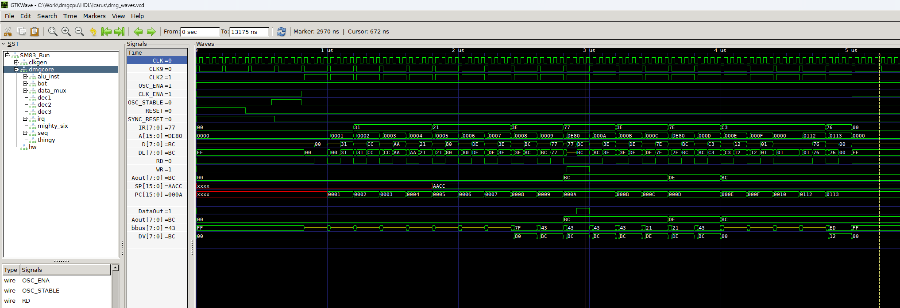

SM83 Core Icarus TestBench
Projects for Icarus Verilog (http://iverilog.icarus.com/).
Two testbench layers live here:
-
SM83 regression suite (issue #400) -
sm83_env.v+tb_sm83_*.v, regression tests on the real SM83 core netlist (register file, ALU + flags, memory addressing, stack/16-bit, jumps, interrupts, HALT modes, CB-prefix rotate/shift/bit ops, instruction timing). Run everything with./run_all.sh(each test prints aRESULT ... PASS/FAILline). Wave images + docs: waves.md, research log: STATUS.md. -
ROM-based harness (below) -
run.v+external_clk.v+roms/, runs blargg-style test ROMs through the same netlist with aBogus_HWmemory model (this was the original per-ROM debug flow).
How to Use
- Download Icarus Verilog.
- Run the simulation using
make(optional parameters:ROMcan be any.memfile underroms/,CYCLESis the number of cycles to simulate):
make run ROM=roms/cpu_instrs.mem CYCLES=1000000
- Use
gmakeinstead ofmakefor NetBSD, since its native make requires.for ifdef / endif directives - Open
dmg_waves.fstin GTKWave or Surfer. - Additionally, you can load prepared signal sets (
debugging_instructions.gtkw) into GTKWave: File -> Read Save File. - Think, scratch your head, fix bugs, redo everything.

Verilator
The simulation can be run in Verilator, which is ~35x faster than Icarus Verilog, but it requires a bit more setup.
First, you need a custom build of a fork of Yosys, found on this branch (or this commit, to be precise). Yosys will be used to convert the current design, which uses high-impedance signals to simulate dynamic logic (unsuitable for simulation in Verilator), into a design that only uses 0 and 1 values and can be simulated with Verilator. For more details, see this PR.
Set the path to the Yosys binary using the DMG_YOSYS environment variable, and run Yosys with the make target yosys:
make yosys
This will create a sm83.yosys.v file that can be used with Verilator (or any other simulator).
Then, run the simulation with make:
make verilator ROM=roms/cpu_instrs.mem CYCLES=1000000
This will create a dmg_waves3.fst file that can be opened in GTKWave or Surfer.
Note that sm83.yosys.v flattens the entire design, so the hierarchy is lost, and many signals are removed. If you need a particular signal, add a (* keep *) attribute to it.
Testing
The CPU is tested by running individual test ROMs from blargg's cpu_instrs test suite (as well as the single ROM version). These ROMs rely very little on other peripherals of the GameBoy besides the CPU core itself. The necessary peripherals are emulated in the module Bogus_HW in run.v.
In case of a test failure, a reference trace can be generated by running the emulator Rodrigodd/gameroy with the wave_trace feature enabled. More specifically at this commit, which contains changes that make the emulator behave more like the simulation.
To assist in finding where the traces diverge, the tool rodrigodd/fst-trace can be used to merge both traces into a single file and create signals that compare some signals of both traces.